Jour 1 — Principes, capteur, géoréférencement & préparation de mission
Orthophoto · Modèle 3D · Cubature — 3 jours
Avertissement
L'enregistrement audio et vidéo des cours est strictement interdit, sauf accord explicite de Dronexperts, du formateur et de l'ensemble des personnes présentes.
Merci de votre compréhension et de votre respect du cadre de la formation.
Module 1
Présentations & objectifs
Faisons connaissance, fixons les objectifs et découvrons le déroulé des 3 jours.
Brevets détenus, heures de vol, drones utilisés, logiciels déjà manipulés (Metashape, Pix4D, DJI Terra, QGIS…).
Votre projet en photogrammétrie
Orthophotos, cubatures, modèles 3D, suivi de chantier ? Pour quels clients ?
Vos attentes
Ce que vous voulez savoir produire et livrer à la fin des 3 jours.
À la fin des 3 jours, vous saurez…
Préparer
Traduire une demande client en livrable et en précision
Calculer GSD, hauteur, recouvrements
Choisir le système de coordonnées
Acquérir
Implanter et relever des GCP au D-RTK 3
Voler une mission ortho et une mission 3D
Contrôler les images sur le terrain
Produire
Orthomosaïque et MNE dans Metashape
Modèle 3D texturé
Mesures, volumes, comparaisons dans CloudCompare
Le fil rouge : être précis et savoir le prouver au client — c'est ce qui distingue une prestation de photogrammétrie d'une simple prise de vue aérienne.
Programme des 3 jours
Jour 1 Théorie
Principes de la photogrammétrie
Capteur, GSD, recouvrements
Les livrables : ortho, MNS/MNT, 3D
Systèmes de coordonnées
RTK, PPK et GCP
Préparer une mission : cubature de carrière
Jour 2 Terrain & ortho
Implantation et relevé des GCP
Vol orthophoto
Vol 3D n°1 : en autonomie
Metashape : de l'image à l'orthomosaïque géoréférencée
2010+Le droneLa photogrammétrie devient accessible à tous
Illustrations : domaine public (Wikimedia Commons)
Stéréoscopie, nadir et parallaxe
Stéréoscopie
Reproduire la perception du relief à partir de 2 images planes d'une même scène, prises de deux positions différentes.
Nadir
La verticale sous l'observateur (l'opposé du zénith). Une photo « au nadir » est prise caméra à -90°, pointée vers le sol.
Parallaxe
Le déplacement apparent d'un objet quand l'observateur se déplace. Plus l'objet est proche (haut), plus il « bouge » entre deux photos : c'est ce décalage qui donne la hauteur.
De la photo au modèle : l'aérotriangulation
Détection de milliers de points caractéristiques sur chaque image
Appariement : on retrouve les mêmes points sur les images voisines (points homologues)
Aérotriangulation : calcul de la position et de l'orientation de chaque photo + nuage épars
Photo numérique + logiciel + ordinateur puissant : ce qui demandait des semaines aux opérateurs d'hier se calcule en quelques heures.
Détection automatique des points homologues
Correction des distorsions de l'objectif (calibration)
Aérotriangulation et reconstruction 3D
Mise à l'échelle du modèle
Géoréférencement grâce aux géotags et aux GCP
Livrables : ortho, MNE, nuage, maillage
Mais le logiciel ne rattrape pas une mauvaise acquisition. Images floues, recouvrement insuffisant, surface uniforme (eau, neige, tôle, ciel), objet qui bouge : aucun réglage ne compensera des photos mal prises.
Domaines d'application
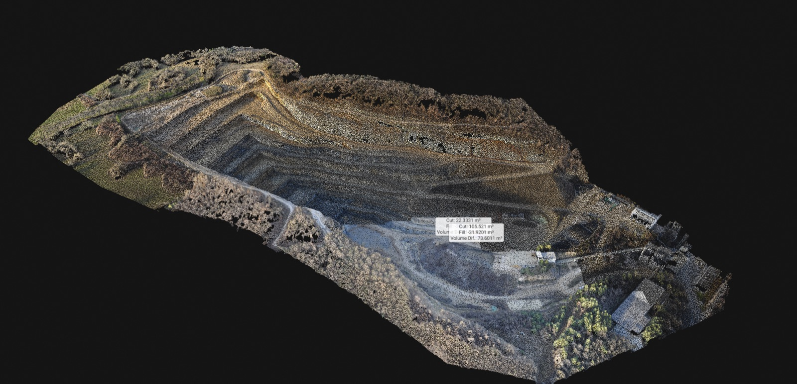
Carrières & stocks
Plans topographiques, cubatures, suivi d'extraction, sécurité des fronts.
BTP, foncier, architecture
Suivi de chantier, état des lieux, relevés de bâti et de toitures, modélisation de quartier.
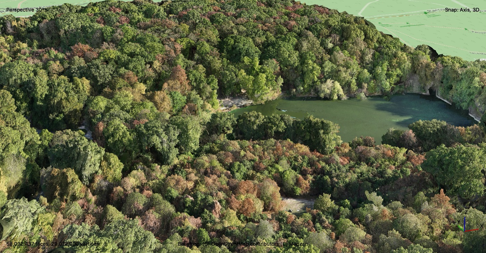
Environnement & agriculture
Écoulements, risques, érosion, espèces invasives, état sanitaire des cultures et des forêts.
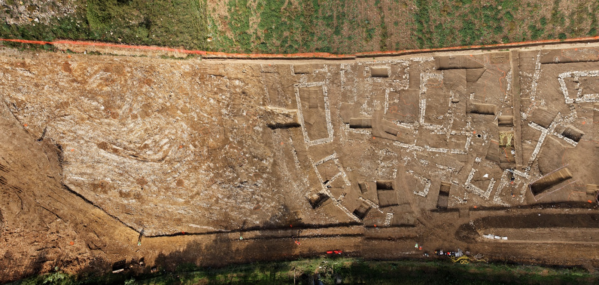
Archéologie & patrimoine
Numérisation de fouilles, monuments, ouvrages d'art.
Image corrigée de toute déformation, superposable à un plan : on y mesure distances et surfaces.
MNS / MNT
Une altitude par pixel : courbes de niveau, profils, volumes.
Nuage de points
Des millions de points XYZ + couleur : la donnée de mesure brute.
Modèle 3D
Maillage texturé avec les photos : visualisation, inspection, communication.
Les quatre livrables sont issus du même vol et du même traitement : on les détaille dans le module 4.
Question
Un détail du terrain n'apparaît que sur une seule photo. Que se passe-t-il au traitement ?
AIl est reconstruit, mais avec moins de précision
BIl ne peut pas être positionné en 3D
CLe logiciel l'extrapole à partir des voisins
DAucune incidence si le drone est RTK
Afficher la réponse
Réponse B. Il faut au moins deux rayons qui se coupent pour calculer la position 3D d'un point. En pratique, on vise qu'un point soit vu sur bien plus de deux photos : c'est le rôle du recouvrement. Le RTK précise la position des photos, il ne remplace pas le recouvrement.
Module 3
Le capteur et la prise de vue
Choisir le bon vecteur, comprendre focale, exposition, GSD, champ de vision, recouvrement et obturateur : tout ce qui conditionne la précision avant même le décollage.
Avec quoi capter ?
Vecteur
Usage typique
Limite
Appareil photo au sol / perche
Petits objets, intérieurs, façades basses
Pas de vue de dessus ; peu de géotag
Cage / rig 360°
Objets et personnes en studio, intérieurs
Volume limité, installation fixe
Véhicule (cartographie mobile)
Routes, rues, réseaux linéaires
Accès limité aux voies
Drone
Sites de quelques m² à plusieurs centaines d'hectares, ouvrages, façades
Réglementation, autonomie, météo
Avion / hélicoptère
Grands territoires (départements, corridors)
Coût, GSD plus grossier
Satellite
Échelle régionale à mondiale
Précision et résolution limitées, nuages
Le drone occupe le créneau idéal : résolution centimétrique, mise en œuvre rapide, vues nadir et obliques, coût maîtrisé.
Quel drone pour la photogrammétrie ?
Tous les drones peuvent faire de la photogrammétrie, mais la qualité et la précision dépendent de :
Positionnement : GNSS standard (métrique) ou RTK / PPK (centimétrique)
Capteur : taille, nombre de pixels, qualité optique
Obturateur mécanique ou électronique
Autonomie : surface couverte par batterie
Environnement : météo, obstacles, accès au site
Un petit drone grand public peut produire un beau modèle 3D. Ce qu'il ne sait pas faire seul, c'est garantir une précision mesurable.
Notre drone de formation : DJI Matrice 4E
Caméra grand-angle
4/3 CMOS, 20 MP (5280 × 3956)
Focale
12,29 mm réelle (24 mm équivalent), f/2.8 à f/11
Obturateur
Mécanique (2 s à 1/2000 s)
Téléobjectif moyen
48 MP, 70 mm équivalent
RTK (fix)
1 cm + 1 ppm H · 1,5 cm + 1 ppm V
Autonomie
jusqu'à 49 min (sans vent)
Intervalle photo mini
0,5 s
Source : fiche technique DJI Matrice 4 Series (enterprise.dji.com)
La focale et l'angle de champ
Focale : distance entre le centre optique de l'objectif et le capteur, en millimètres.
Courte focale → grand angle de champ, large emprise au sol
Longue focale → angle étroit, plus de détails, petite emprise
La focale « équivalent 24×36 » permet de comparer des capteurs de tailles différentes
En photogrammétrie, on préfère un angle de champ assez large (focale courte à moyenne), sans effet « fish-eye » : les bords d'image restent exploitables et la géométrie est meilleure.
Le triangle d'exposition
Trois réglages se partagent la lumière : en modifier un oblige à compenser avec les autres.
Priorité n°1 : la netteté
Une image floue ne produit aucun point fiable. On fixe d'abord une vitesse rapide.
Puis l'ouverture
Ouverture moyenne : bonne netteté sur toute l'image. En vol à plusieurs dizaines de mètres, la profondeur de champ n'est pas un problème.
Enfin l'ISO
Le plus bas possible : le bruit perturbe l'appariement des points.
Le flou de bougé
Flou = vitesse du drone × temps de pose
Drone à 10 m/s
Déplacement pendant la pose
Avec un GSD de 2,7 cm
1/250 s
4 cm
Flou : > 1 pixel
1/500 s
2 cm
Limite
1/1000 s
1 cm
Net
1/2000 s
0,5 cm
Net
Repère pratique : le déplacement pendant la pose doit rester nettement inférieur au GSD (idéalement sous la moitié).
Vitesse rapide
moins de lumière
moins de flou
Vitesse lente
plus de lumière
plus de flou
Quelques images floues peuvent compromettre toute la mission ! Par temps sombre : on ralentit le drone plutôt que d'allonger le temps de pose.
Le vent ajoute ses propres mouvements (roulis, tangage) : il faut connaître son drone et vérifier les premières images au sol.
Le GSD : la taille d'un pixel au sol
GSD (Ground Sampling Distance) : distance d'échantillonnage au sol, c'est-à-dire la distance réelle entre les centres de deux pixels voisins.
GSD de 10 cm : 1 pixel = 10 cm au sol
GSD de 2 cm : 1 pixel = 2 cm → détails plus fins
Plus le GSD est petit, plus la résolution est élevée… et plus il y a de photos, de stockage et de calcul
Le GSD est le premier chiffre à fixer avec le client : il conditionne la hauteur de vol, le nombre de photos et la précision atteignable.
Le GSD, en image
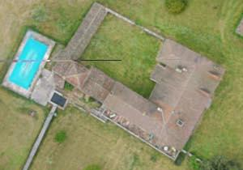
GSD de référence toiture, piscine, terrasse lisiblesGSD × 3 les détails fins disparaissent
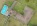
GSD × 8 on devine les formes
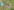
GSD × 20 inexploitable pour la mesure
Résolution
Densité de pixels (pixels par cm ou par pouce). Au sol, c'est le GSD qui l'exprime.
Définition
Nombre de pixels de l'image (ex. 5280 × 3956 = 20 MP). Une grande définition ne garantit pas un petit GSD : tout dépend de la hauteur et de la focale.
Extrait d'orthophoto Dronexperts rééchantillonné
Calculer le GSD
GSD =
taille d'un pixel du capteur × hauteur de volfocale réelle ou largeur du capteur × Hfocale × largeur image (px)
Matrice 4E, caméra grand-angle : pixel de 3,36 µm, focale réelle de 12,29 mm → GSD (cm) ≈ H (m) ÷ 36,6
Hauteur H
GSD
Emprise d'une photo
40 m
1,1 cm
58 × 43 m
60 m
1,6 cm
87 × 65 m
80 m
2,2 cm
115 × 87 m
100 m
2,7 cm
144 × 108 m
120 m
3,3 cm
173 × 130 m
Exemple
Le client veut un GSD de 2 cm. H = 2 × 36,6 ≈ 73 m au-dessus du sol.
La hauteur se compte au-dessus du terrain, pas du point de décollage : sur une carrière avec 40 m de dénivelé, le GSD varie fortement si l'on vole à hauteur constante par rapport au décollage.
Le FOV : champ de vision et emprise au sol
FOV (Field of View) : l'angle de la scène vue par la caméra, en degrés (horizontal, vertical ou diagonal).
FOV large : grande zone par photo, moins de photos, mais détails plus grossiers à hauteur égale
FOV étroit : détails, mais petite surface couverte
FOV + hauteur + définition → emprise et GSD
Emprise = 2 × H × tan(FOV ÷ 2)
Plus on monte, plus l'emprise grandit… et plus le GSD se dégrade.
Les recouvrements : frontal et latéral
80 % / 70 %frontal / latéral : le minimum pour un terrain « facile »
Moins de recouvrement = trous, déformations, alignement raté
Plus de recouvrement = plus de photos et de temps de calcul
Ne descendez jamais en dessous de 70 % : c'est l'erreur la plus fréquente des débutants pressés de finir une batterie.
Du GSD au plan de vol : le calcul
Matrice 4E, GSD visé 2,7 cm → H = 100 m · emprise 144 m (travers) × 108 m (sens du vol)
Distance entre photos
(1 − 0,80) × 108 m = 21,6 m
Distance entre lignes
(1 − 0,70) × 144 m = 43 m
Intervalle photo
à 10 m/s : 21,6 ÷ 10 = 2,2 s (mini 0,5 s ✓)
Pour 16 ha (400 × 400 m)
≈ 10 lignes × 19 photos ≈ 190 photos, ~ 10 min de vol
Le logiciel de plan de vol (DJI Pilot 2) fait ces calculs pour vous… mais il faut savoir les vérifier et les expliquer au client (devis, durée, nombre de batteries).
Ajouter une marge autour de la zone (au moins une demi-emprise) : les bords d'un chantier sont toujours moins bien reconstruits que le centre.
Obturateur mécanique ou électronique ?
Obturateur mécanique
S'ouvre et se ferme sur toute l'image à la fois : géométrie fidèle, même en mouvement. Fortement recommandé pour l'ortho et la mesure.
Obturateur électronique
Lit le capteur ligne par ligne. Si le drone avance pendant la lecture, l'image est cisaillée : distances et angles faussés.
Sans obturateur mécanique : ralentir, ou faire des arrêts à chaque photo, et activer la correction « rolling shutter » dans Metashape.
Les distorsions de l'image
Perspective & relief
Même au nadir, les objets hauts (bâtiments, arbres, stocks) « basculent » vers les bords de l'image. Leur sommet n'est pas au-dessus de leur pied.
Distorsion de l'objectif
Les grands angles courbent les lignes droites en bord d'image (effet « fish-eye »). La calibration de la caméra la corrige au traitement.
Roulis & tangage
Le vent et les corrections de position inclinent la caméra de quelques degrés : l'emprise se déforme. La nacelle stabilisée limite l'effet, le logiciel recalcule l'orientation de chaque photo.
L'orthorectification corrige ces trois déformations grâce au modèle d'élévation : c'est ce qui transforme des photos en orthophoto.
Question
Avec le Matrice 4E (GSD ≈ H ÷ 36,6), à quelle hauteur voler pour obtenir un GSD de 1,5 cm ?
A36 m
B55 m
C80 m
D120 m
Afficher la réponse
Réponse B — environ 55 m. H = GSD × 36,6 = 1,5 × 36,6 ≈ 55 m au-dessus du sol. À 120 m, on obtiendrait environ 3,3 cm.
Question
Ciel couvert, lumière faible, GSD de 2 cm. Les premières photos sont légèrement floues. Que faites-vous en priorité ?
AJ'allonge le temps de pose pour éclaircir
BJe baisse le recouvrement pour finir plus vite
CJe réduis la vitesse du drone et je garde une pose courte
DAucun problème : le logiciel corrige le flou
Afficher la réponse
Réponse C. Le flou de bougé dépend du produit vitesse × temps de pose. Pour garder une image nette quand la lumière manque, on ralentit le drone (et on accepte un peu plus d'ISO). Aucun logiciel ne récupère une image floue.
Module 4
Les livrables
Orthophoto, modèles numériques de surface et de terrain, nuage de points, maillage 3D : à quoi sert chacun, et la différence avec un nuage LiDAR.
Photo aérienne ou orthophoto ?
Une orthophoto est une image issue de photos aériennes, rectifiée géométriquement pour que chaque point soit superposable à une carte plane.
Ont été corrigés :
les déformations dues au relief
l'inclinaison de l'axe de prise de vue
les distorsions de l'objectif
Géoréférencée, elle s'intègre directement dans un SIG (QGIS, ArcGIS) ou un logiciel de DAO (AutoCAD, Covadis).
À quoi sert une orthophoto ?
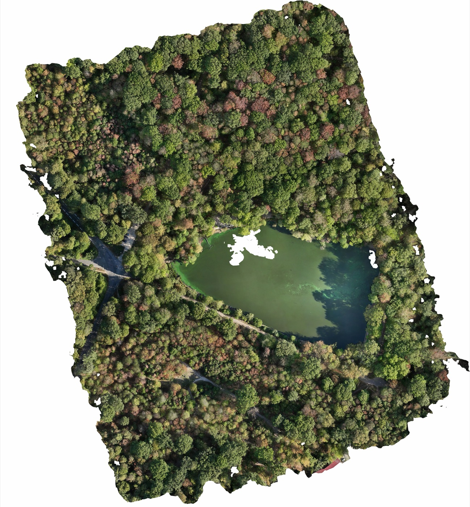
Orthomosaïque Dronexperts — massif boisé et étang (près de 660 images)
Mesures de distances et surfaces
Fond de plan topographique
Plans d'occupation des sols, urbanisme
Plans de prévention des risques, études d'impact
Détection de changements entre deux dates
État sanitaire de la végétation, agriculture
Suivi de chantier, état des lieux
Fond d'image pour SIG et web
On produit aussi des orthos de façade : le même principe, sur un plan vertical (relevés de pierre, de fissures, de calepinage).
MNT / DTM (terrain) : le sol, objets retirés par classification
MNE / DEM : terme générique (élévation)
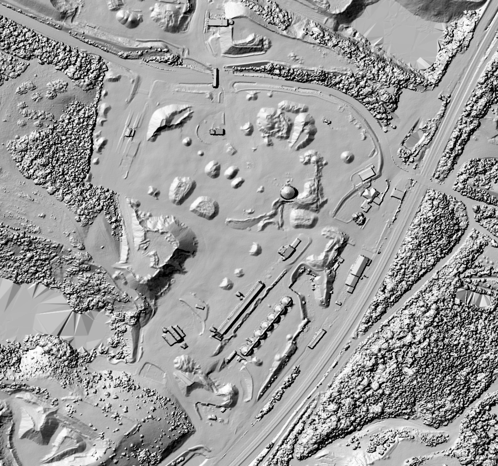
MNS : stocks, convoyeurs, silos, arbres
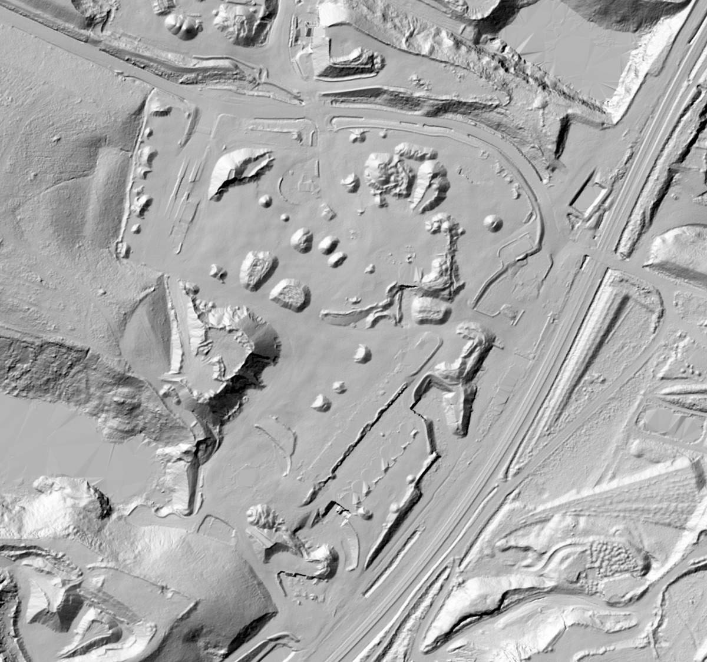
MNT : végétation et bâti retirés
Relief ombré : IGN, LiDAR HD (Géoplateforme, licence ouverte Etalab) — aire de stockage d'une carrière du Boulonnais (62)
Les modèles d'élévation : usages
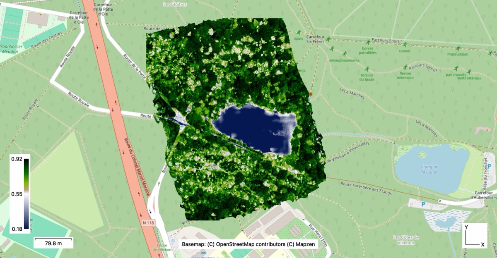
Indice de végétation (NDVI) sur ortho multispectrale
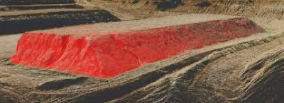
Stock isolé pour un calcul de volume
MNS
Volumes de stocks
Urbanisme, hauteurs de bâti
Télécom (visibilité)
Gestion forestière (hauteur de canopée)
MNT
Topographie, courbes de niveau
Hydrologie, crues
Géologie, archéologie
Terrassements
Type
Formats courants
Raster (une valeur par pixel)
GeoTIFF (.tif), ASCII Grid (.asc), .png / .kmz pour la visualisation
Vecteur (points, lignes)
.xyz, .las, .dxf, .dwg, .shp (courbes de niveau)
Nuage de points et maillage 3D
Nuage de points
Ensemble de points XYZ + couleur issus des pixels des photos
Modèle discontinu : on voit « à travers »
La donnée de référence pour les mesures précises
Maillage (mesh) texturé
Triangles reliant les points voisins : surface fermée
Les photos sont plaquées dessus : la texture
Visualisation, inspection, volumes, impression 3D
Selon le logiciel, la puissance de l'ordinateur, le capteur et les réglages, la modélisation peut être magnifique… ou pas ! On le verra au jour 3.
Nuage LiDAR ≠ nuage photogrammétrique
Photogrammétrie
LiDAR
Principe
Pixels de photos, triangulation
Impulsions laser, temps de retour
Végétation
Canopée seulement
Traverse (échos multiples) → MNT sous forêt
Couleur / texture
Oui, réaliste
Non (ou caméra associée)
Lumière
Dépend de l'éclairage
Peu sensible
Acquisition
Recouvrement important
Balayage continu, plus rapide
Coût
Abordable
Capteur et traitement plus chers
Ce ne sont pas des concurrents mais des outils complémentaires : LiDAR pour le terrain sous végétation, photogrammétrie pour le visuel et les surfaces dégagées.
Livrer au bon format
Livrable
Formats
Pour qui / quel logiciel
Orthomosaïque
GeoTIFF (.tif), JPEG + fichier de calage (.jgw), KMZ
SIG (QGIS, ArcGIS), DAO, Google Earth
MNS / MNT
GeoTIFF 32 bits, ASCII Grid, .xyz
Bureaux d'études, hydrologues, SIG
Courbes de niveau
.dxf, .shp
Géomètres, topographes, AutoCAD / Covadis
Nuage de points
.las / .laz, .e57, .ply
CloudCompare, logiciels de topographie, BIM
Maillage 3D
.obj, .fbx, .ply, Cesium 3D Tiles
Visualisation web, architecture, jeu vidéo, impression 3D
Rapport
PDF (rapport de traitement Metashape)
Le client : preuve de la précision
Toujours demander au client : quel logiciel va ouvrir le fichier, et dans quel système de coordonnées il travaille.
La précision finale dépend de 4 facteurs
Le GSD
La taille du pixel au sol : on ne mesure pas plus fin que 1 à 3 pixels.
Le géotag
La précision de la position des photos : GNSS seul (mètres) ou RTK (centimètres).
Le recouvrement
Plus un point est vu sur de nombreuses photos, plus sa position est robuste.
Les points au sol
GCP et points de contrôle : ils calent le modèle et prouvent sa précision.
Précision relative
Les mesures à l'intérieur du modèle (une longueur, un volume) sont justes, même si le modèle est mal positionné sur la Terre.
Précision absolue
Chaque point est à sa vraie position dans le système de coordonnées : superposable au cadastre, à un plan, à un autre levé.
Question
Un client veut connaître l'altitude du sol sous un bois pour étudier l'écoulement des eaux. Quelle est la meilleure solution ?
AUn MNS photogrammétrique à 1 cm de GSD
BUne orthophoto géoréférencée
CUn MNT issu d'un relevé LiDAR
DUn maillage 3D texturé
Afficher la réponse
Réponse C. La photogrammétrie ne voit que la canopée : quel que soit le GSD, le sol sous les arbres n'est pas mesuré. Le LiDAR, grâce à ses échos multiples, atteint le sol et permet de construire un MNT fiable sous couvert végétal.
Module 5
Géoréférencement & systèmes de coordonnées
Comment une photo connaît sa position, le GNSS et ses erreurs, coordonnées géographiques ou projetées, Lambert 93, coniques conformes CC, et le piège des altitudes.
Chaque photo de drone connaît sa position
Appareil photo classique : aucune position enregistrée
Smartphone : une position, mais imprécise (plusieurs mètres)
Drone : chaque photo est géotaguée en X, Y, Z grâce à son récepteur GNSS, plus l'orientation de la nacelle
La photogrammétrie repose sur la position de chaque photo dans l'espace. Si elle est fausse, tout le modèle est faux… ou mal placé.
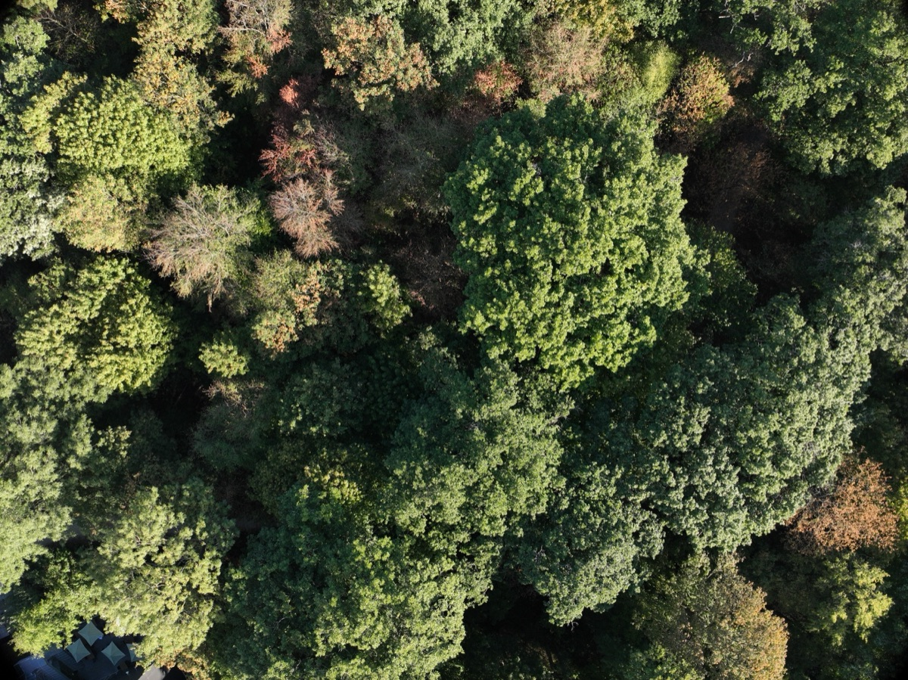
La photo brute correspondante (Mavic 3M, nadir, 70 m)
Métadonnées XMP — DJI_0001.JPG
Latitude
48,796239564° N
Longitude
2,219056724° E
Altitude « absolue »
282,491 m
Hauteur relative au décollage
69,964 m
Inclinaison nacelle
−90,00° (nadir)
Cap du drone
−14,40°
RtkFlag
50 = RTK fixé
Écart-type RTK (lat / lon / haut.)
1,1 cm / 0,9 cm / 2,2 cm
Obturateur
Mechanical
Extrait réel d'une photo du projet Dronexperts de Meudon
Le GNSS : des constellations de satellites
GNSS (Global Navigation Satellite System) : terme générique. Le « GPS » n'est que le système américain. Les récepteurs modernes utilisent les quatre en même temps.
GPSÉtats-Unis une trentaine de satellites
GLONASSRussie environ 24 satellites
GalileoUnion européenne la constellation européenne
BeiDouChine une quarantaine de satellites
Le principe
Le récepteur mesure sa distance à au moins 4 satellites (temps de trajet du signal × vitesse de la lumière) et en déduit sa position X, Y, Z et l'heure.
La limite
Seul, un récepteur GNSS de drone est précis à 1 à 5 mètres en horizontal, et souvent moins bien en vertical. Insuffisant pour une mesure centimétrique.
Pourquoi le GNSS seul n'est pas précis
Ionosphère et troposphère ralentissent et dévient le signal
Multitrajets : réflexions sur bâtiments, falaises, fronts de taille
Orbites et horloges des satellites imparfaitement connues
Géométrie : satellites groupés ou masqués (relief, arbres)
Mouvement du drone et des satellites
La solution : comparer avec un récepteur fixe placé sur un point connu, qui subit les mêmes erreurs au même moment. C'est le principe du RTK (module 6).
Géographiques ou projetées ?
Géographiques (sur l'ellipsoïde)
Latitude φ et longitude λ, en degrés
Suivent la courbure de la Terre
Ex. : WGS 84 (GPS), ETRS89 / RGF93
Navigation, GPS, données mondiales
Projetées (sur un plan)
X (Est) et Y (Nord), en mètres
La Terre est « aplatie » par une projection
Ex. : Lambert 93, CC 9 zones, UTM
Plans, topographie, mesures de distances et de surfaces
Trois formats pour un même point
Notre site d'étude : l'aire de stockage d'une carrière à Ferques (Pas-de-Calais)
Même point en CC50. En Lambert 93 : E ≈ 614 575 m, N ≈ 7 082 302 m.
DD = degrés + minutes ÷ 60 + secondes ÷ 3600
Une coordonnée sans son système ne veut rien dire. Toujours noter : système, projection, unité, référence d'altitude.
Les systèmes à connaître en France
Système
Type
À retenir
Code EPSG
WGS 84
Géographique
Le système mondial du GPS et des drones. Sa réalisation suit l'ensemble des plaques tectoniques.
4326
ETRS89 / RGF93
Géographique
Le système européen / sa réalisation française officielle, fixé à la plaque eurasienne. Très proche de WGS 84.
RGF93 v2b : 9782
Lambert 93
Projeté
Projection officielle de la France métropolitaine (cadastre, IGN, administrations).
2154 (v1) · 9794 (v2b)
CC 9 zones (CC42 à CC50)
Projeté
9 bandes de latitude : altération des distances très faible localement. Travaux de précision.
3942 à 3950 (v1)
UTM (zones 30, 31, 32)
Projeté
Système mondial en fuseaux de 6° de longitude ; utilisé à l'international.
32630 à 32632 (WGS 84)
NGF-IGN69
Altitude
Le système d'altitudes officiel (continent). Corse : NGF-IGN78.
5720
Lambert I à IV, ED50, NTF
Anciens
Encore présents dans de vieux plans : à reconnaître pour les convertir.
27571 à 27574…
WGS 84 et RGF93 s'écartent d'environ 2,5 cm par an depuis 1989 (dérive de la plaque eurasienne), soit près d'un mètre aujourd'hui : invisible pour une carte, rédhibitoire pour un levé centimétrique.
Les coniques conformes 9 zones (CC)
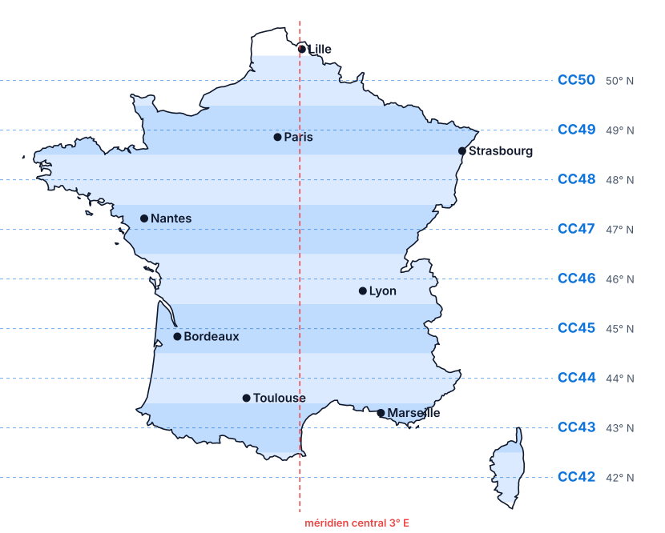
Une zone par degré de latitude, de 42° N (CC42) à 50° N (CC50)
9 projections coniques conformes, une par bande de latitude (et non de longitude)
Zone CCxx : parallèle d'origine xx° N, méridien central 3° E
Chaque zone s'utilise sur ± 1° autour de son parallèle : les zones se recouvrent
Coordonnées en mètres : E ≈ 1 700 000, N ≈ (n° de zone) × 1 000 000 + 200 000
Altération des distances
Lambert 93
CC
Sur toute la zone
de −1 à +3 m/km
± 9 cm/km
À Ferques (50,8° N)
+2 m/km
−8 cm/km
Erreur sur 100 m
+20 cm
−0,8 cm
Lambert 93 ou CC : comment choisir ?
Lambert 93
Projets couvrant une grande partie de la France ou plusieurs régions
Intégration au cadastre, aux données IGN, aux SIG des collectivités
Orthophotos de grande emprise, cartographie
CC (zone du chantier)
Chantier localisé demandant une haute précision des distances
Ingénierie, terrassement, cubatures, relevés de géomètres
Échelle d'une ville, d'un site, d'une carrière
La règle d'or : c'est le client qui choisit. On livre dans le système dans lequel il travaille déjà (son géomètre, son bureau d'études, son SIG). On le demande avant la mission, pas après le traitement.
Le piège du Z : hauteur ou altitude ?
Le GNSS mesure une hauteur ellipsoïdale h
Les plans et le client utilisent l'altitude NGF-IGN69 H
L'écart N est d'environ 45 à 55 m en France métropolitaine
On convertit avec la grille officielle de l'IGN : RAF20
Oublier la conversion = un modèle 50 m trop haut. Mélanger des GCP en NGF et des photos en ellipsoïdal = un modèle déformé.
Bonne nouvelle : Metashape intègre la grille RAF20 (fr_ign_RAF20). Il suffit de choisir un système « Lambert-93 + NGF-IGN69 » ou « CCxx + NGF-IGN69 ».
À retenir
Une coordonnée se livre toujours avec sa « carte d'identité » : système géodésique (RGF93 v2b) · projection (Lambert 93 ou CCxx) · unité (m) · référence d'altitude (NGF-IGN69).
Un chantier de terrassement à Bordeaux (44,8° N) demande une haute précision sur les distances. Quelle projection proposer ?
AWGS 84 en degrés décimaux
BCC44
CCC45
DUTM zone 31
Afficher la réponse
Réponse C — CC45. Les zones CC sont des bandes de latitude : on choisit celle dont le parallèle d'origine est le plus proche (45° N pour 44,8° N). WGS 84 n'est pas une projection (degrés, pas mètres). Et toujours : vérifier ce qu'utilise le client.
Question
Votre modèle est parfait en planimétrie, mais tous les points sont environ 48 m trop hauts par rapport au plan du géomètre. Cause la plus probable ?
ALe recouvrement était insuffisant
BHauteurs ellipsoïdales non converties en altitudes NGF
CMauvaise zone CC
DUn indice Kp trop élevé
Afficher la réponse
Réponse B. Un décalage vertical constant d'une cinquantaine de mètres correspond à l'ondulation du géoïde N : les hauteurs ellipsoïdales du GNSS n'ont pas été converties en altitudes NGF-IGN69 (grille RAF20).
Module 6
RTK, PPK et points d'appui (GCP)
Passer du mètre au centimètre : la correction RTK en temps réel, le post-traitement PPK, la base D-RTK 3 et les points de calage au sol.
Le RTK : la correction en temps réel
RTK (Real-Time Kinematic) : technique de positionnement GNSS de précision centimétrique, en temps réel.
La base, fixe sur un point de coordonnées connues, compare sa position calculée à sa position vraie
Elle en déduit les erreurs du moment (ionosphère, troposphère, orbites, horloges)
Elle les envoie au drone, qui corrige sa propre position : ~ 1 à 2 cm
D'où viennent les corrections ?
Base locale (D-RTK 3)
La base est posée sur le chantier et émet par radio vers le drone
Fonctionne sans réseau mobile
Précision absolue uniquement si la base est sur un point connu (ou calée sur un réseau)
Précision : 1 cm + 1 ppm (1 mm par km d'éloignement)
Réseau RTK (NRTK)
Corrections d'un réseau de stations permanentes, reçues par internet (protocole NTRIP, 4G)
Coordonnées directement en RGF93 : précision absolue immédiate
Nécessite une couverture mobile sur le site
Réseaux payants (Teria, Orphéon…) ou communautaire gratuit (Centipède)
Combinaison fréquente : la base D-RTK 3 est d'abord positionnée grâce au réseau, puis elle diffuse ses corrections par radio au drone, même là où la 4G est faible.
Distance base – mobile : idéalement moins de 10 à 20 km pour rester centimétrique. Centipède : réseau ouvert soutenu notamment par Arvalis et les Chambres d'agriculture (centipede.fr).
La base doit être sur un point connu
La base corrige le drone par rapport à elle-même. Si sa propre position est approximative (GNSS seul : ~1,5 m), tout le levé est décalé d'autant.
Précision absolue : coordonnées justes dans le référentiel national
Cohérence dans le temps : deux levés à 6 mois d'écart se superposent (suivi de carrière !)
Compatibilité avec les plans du géomètre, le cadastre, les autres intervenants
Attention : une base ou une canne RTK utilisée sans point connu ni réseau ne donne qu'une précision relative. Pour le client qui veut des coordonnées, c'est inutile.
Notre station : la DJI D-RTK 3
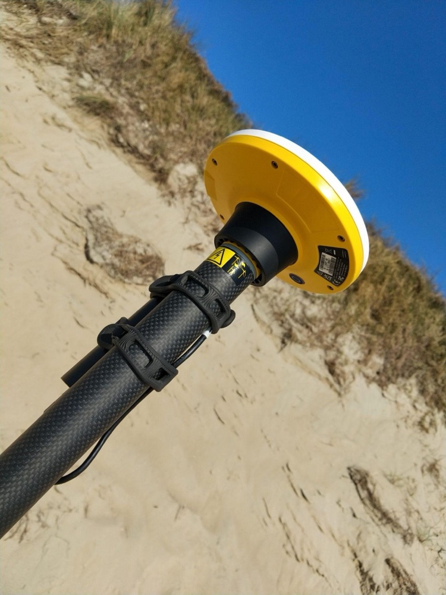
Récepteur DJI sur canne
Base
Sur trépied, diffuse les corrections RTK à plusieurs drones à la fois.
Relais
Prolonge la liaison du drone derrière un relief ou un bâtiment.
Mobile (rover)
Sur canne : relève les GCP, avec compensation d'inclinaison.
Constellations
GPS, Galileo, GLONASS, BeiDou, QZSS
Levé mobile, canne verticale
0,8 cm + 1 ppm H · 1,5 cm + 1 ppm V
Levé incliné
< 2 cm jusqu'à 30° d'inclinaison
Base sans calage (point isolé)
≈ 1,5 m H · 3 m V → à caler sur un point connu ou un réseau
Post-Processed Kinematic : le drone et une base enregistrent leurs données GNSS brutes pendant le vol ; on calcule les positions corrigées au bureau.
Pas besoin de liaison radio ni de 4G en vol
Idéal en zone blanche, falaises, grandes distances
Une étape de traitement en plus (logiciel PPK)
L'indice Kp
Les éruptions solaires perturbent l'ionosphère et dégradent les signaux GNSS, parfois jusqu'à empêcher le fix RTK.
0-345-9 : tempête
Échelle de 0 à 9. Vigilance à partir de 4 ; report du vol de précision en cas de tempête (Kp ≥ 5).
Réflexe de préparation : consulter la prévision Kp (NOAA SWPC, SpaceWeatherLive, applications météo drone) la veille et le matin du vol.
Les GCP : des points d'appui au sol
GCP (Ground Control Point) : une cible visible sur les photos, dont on a mesuré les coordonnées au centimètre avec un récepteur GNSS RTK.
On pose les cibles et on mesure leur centre à la canne (D-RTK 3 en mode mobile)
On vole : les cibles apparaissent sur de nombreuses photos
Dans Metashape, on pointe chaque cible sur les photos et on importe ses coordonnées
Le logiciel recale tout le modèle sur ces points
Fonctionne avec n'importe quel drone, même sans RTK : c'est la correction « manuelle » du géotag.
Mesure d'une cible au sol
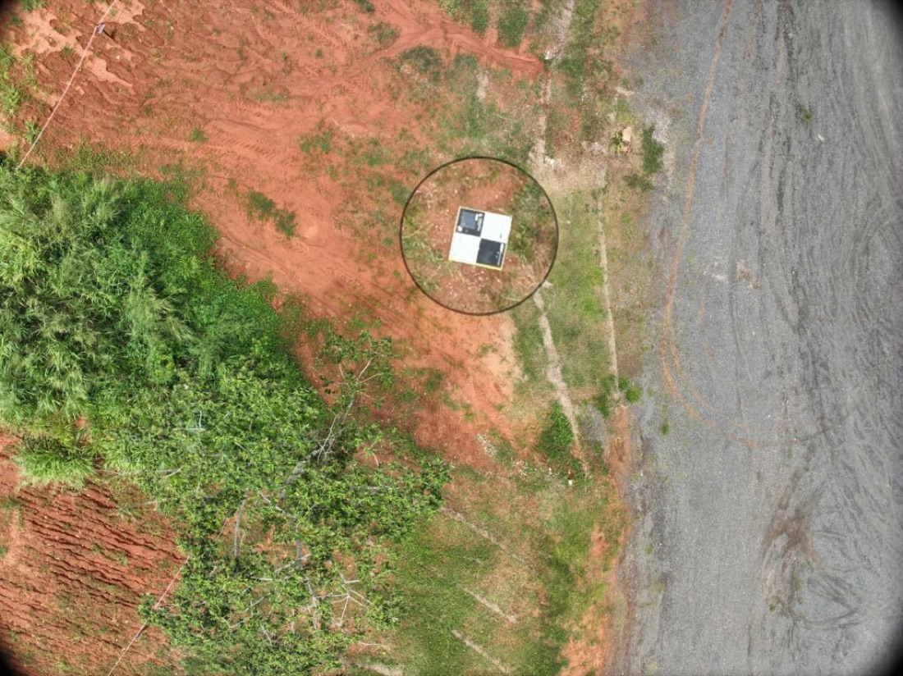
La même cible vue du drone
Points d'appui et points de contrôle
Points d'appui (GCP)
Utilisés dans le calcul : ils calent et redressent le modèle.
Points de contrôle (check points)
Mesurés de la même façon mais exclus du calcul. On compare ensuite leur position dans le modèle à leur position mesurée.
L'écart sur les points de contrôle est la seule vraie preuve de la précision. C'est ce chiffre que l'on met dans le rapport au client.
Où et comment placer les points ?
Au moins 5 points d'appui, généralement pas plus de 10 sur un site courant
Répartis sur toute la zone : un à chaque angle + un au centre
Sur les bords et aux points hauts et bas du relief
Espacement de repère : 400 m maximum entre deux points
Jamais tous alignés, jamais regroupés au même endroit
En plus : 3 à 5 points de contrôle intercalés
Ils doivent être bien visibles sur les photos : pas sous un arbre, pas dans l'ombre d'un bâtiment, pas sur une zone qui bouge (tas en cours de chargement !).
La cible
Damier noir et blanc ou croix contrastée, centre net
Taille : au moins 10 × le GSD (30 cm pour 3 cm de GSD, 50-60 cm conseillés)
Matériau mat et plat, bien fixé (vent, engins)
La mesure
Canne verticale (bulle), pointe au centre exact
Statut FIX obligatoire, plusieurs secondes d'enregistrement
Nommer le point comme la cible (GCP01, CP01…) et le photographier
Noter le système et la référence d'altitude dans le nom du fichier ou l'en-tête
Séparateur et décimales cohérents (point ou virgule)
Attention à l'ordre : certains logiciels attendent Y avant X, ou latitude avant longitude
Inverser X et Y, ou se tromper de zone CC : le modèle se retrouve à des centaines de kilomètres. Toujours vérifier un point sur une carte avant de traiter.
RTK, GCP ou les deux ?
Stratégie
Avantages
Limites
Précision type
Ni RTK ni GCP
Rapide, aucun matériel
Positionnement et échelle approximatifs
1 à 5 m
GCP seuls (drone non RTK)
N'importe quel drone ; précision maîtrisée
Pose et mesure longues ; beaucoup de points sur grande surface
1 à 3 GSD
RTK seul
Grandes surfaces sans (ou presque sans) points au sol
Aucune preuve de précision ; biais vertical possible
quelques cm
RTK + points de contrôle
Rapide et prouvé ; quelques GCP si besoin
Matériel plus coûteux
1 à 2 GSD, vérifiée
Notre méthode en formation : Matrice 4E en RTK + D-RTK 3 calée sur un point connu, 5 GCP et 3 à 4 points de contrôle. On comparera au jour 2 le résultat avec et sans GCP.
Question
Vous posez la D-RTK 3 sur un trépied au milieu du site, sans réseau ni point connu, et volez en RTK. Votre levé sera…
APrécis au centimètre en absolu
BCohérent en relatif, mais décalé d'environ 1 à 2 m
CInexploitable, même pour des volumes
DPrécis si l'indice Kp est faible
Afficher la réponse
Réponse B. Le drone est corrigé par rapport à la base, dont la position n'est connue qu'à environ 1,5 m. Formes, distances et volumes restent justes, mais tout le levé est décalé : impossible de le superposer à un plan ou à un levé précédent.
Question
Quel est le rôle d'un point de contrôle (check point) ?
ACaler le modèle quand le RTK est perdu
BServir de point de décollage du drone
CMesurer la précision réelle, sans participer au calcul
DRemplacer la base RTK
Afficher la réponse
Réponse C. Un point de contrôle est mesuré comme un GCP mais exclu du calcul : l'écart entre sa position dans le modèle et sa position mesurée donne la précision réelle, que l'on peut annoncer au client.
Module 7
Préparer une mission : la cubature d'une carrière
Cas d'étude complet en salle : de la demande du client au plan de vol, aux points d'appui et à la check-list terrain.
Le cas d'étude
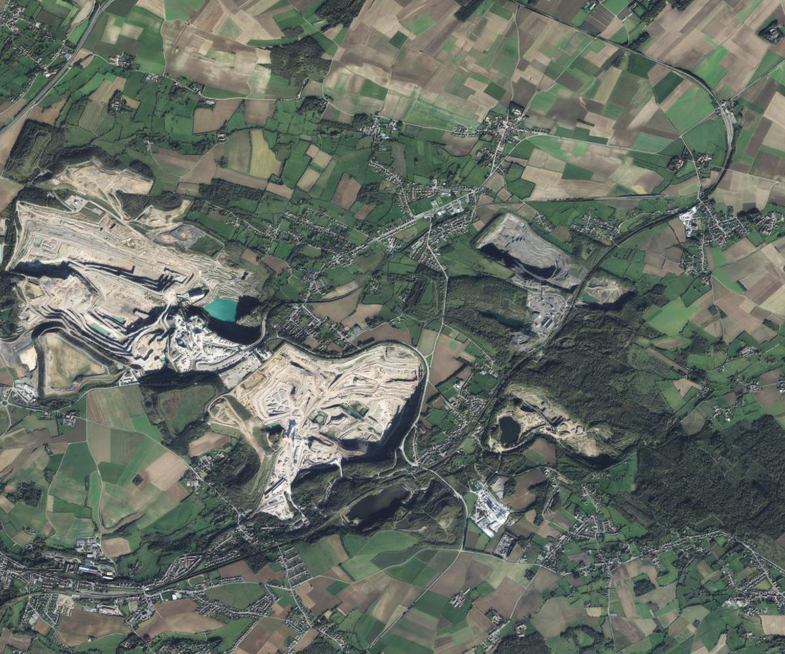
Orthophoto IGN (Géoplateforme, licence ouverte Etalab) — carrières de calcaire du Boulonnais, Ferques (62)
La demande de l'exploitant
« Nous avons besoin des volumes de nos stocks de granulats sur l'aire de stockage pour notre inventaire de fin d'année. Notre géomètre travaille en CC50. »
Aire de stockage d'environ 13 ha, une vingtaine de stocks
Exercice d'école sur un site réel, choisi pour sa richesse : l'exploitant n'est pas notre client. Chaque formateur présentera ensuite son propre site de vol.
Le briefing client : les bonnes questions
Le livrable
Volumes seuls ou aussi ortho, MNS, plan ?
Par stock, par matériau ?
Quelle surface de référence pour le pied des stocks ?
La précision
Tolérance attendue sur les volumes (ex. ± 3 %)
Comparaison avec un levé précédent ?
Rapport de précision exigé ?
Le référentiel
Système : RGF93 / CC50
Altitudes : NGF-IGN69
Points connus sur site (bornes du géomètre) ?
Le calendrier
Date d'inventaire : stocks immobiles pendant le vol
Créneau hors production, hors tirs de mines
La sécurité
Protocole d'accueil du site, plan de prévention
Interlocuteur sur place, circulation des engins
EPI obligatoires
Les formats
Logiciel du client (AutoCAD, Covadis, QGIS) ?
Tableau des volumes (.xlsx / .pdf)
GeoTIFF, .dxf, .las ?
Réglementation & contraintes du site
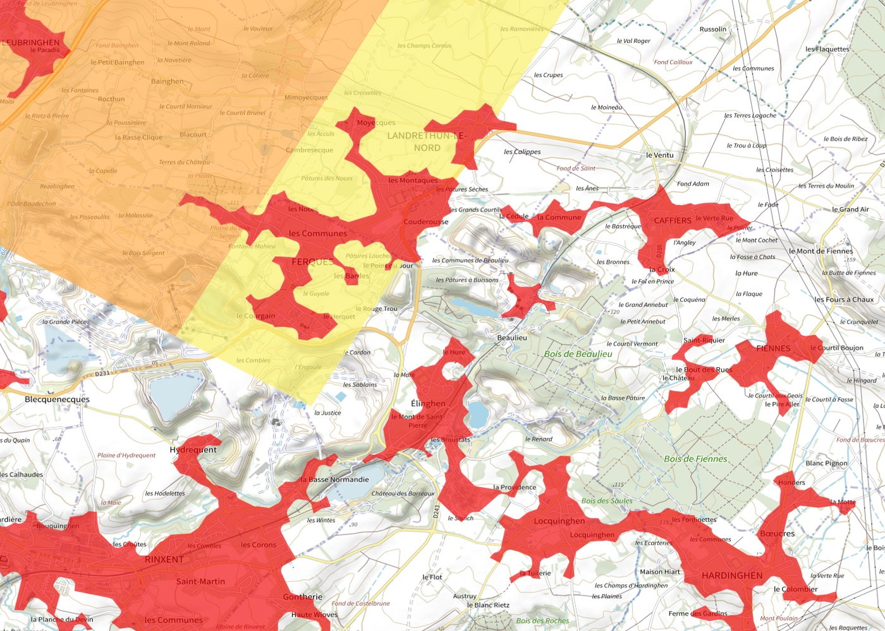
Carte des restrictions UAS (Géoportail) — cercle bleu : notre site. Zones colorées : interdictions et hauteurs maximales (voir la légende Géoportail)
Rappel — les règles détaillées relèvent de la formation télépilote :
Consulter la carte des restrictions UAS et les informations aéronautiques du jour
Déterminer la catégorie d'exploitation selon le marquage de classe du drone utilisé, la distance aux tiers et l'environnement
Tenir compte des zones habitées voisines
Voie ferrée : respecter la distance de 30 m
Accord écrit de l'exploitant du site, protocole sécurité signé
Spécificités carrière : obstacles hauts (convoyeurs, silos), engins, tirs de mines, poussière, fronts de taille. Casque, gilet haute visibilité et chaussures de sécurité.
Délimiter la zone et placer les points
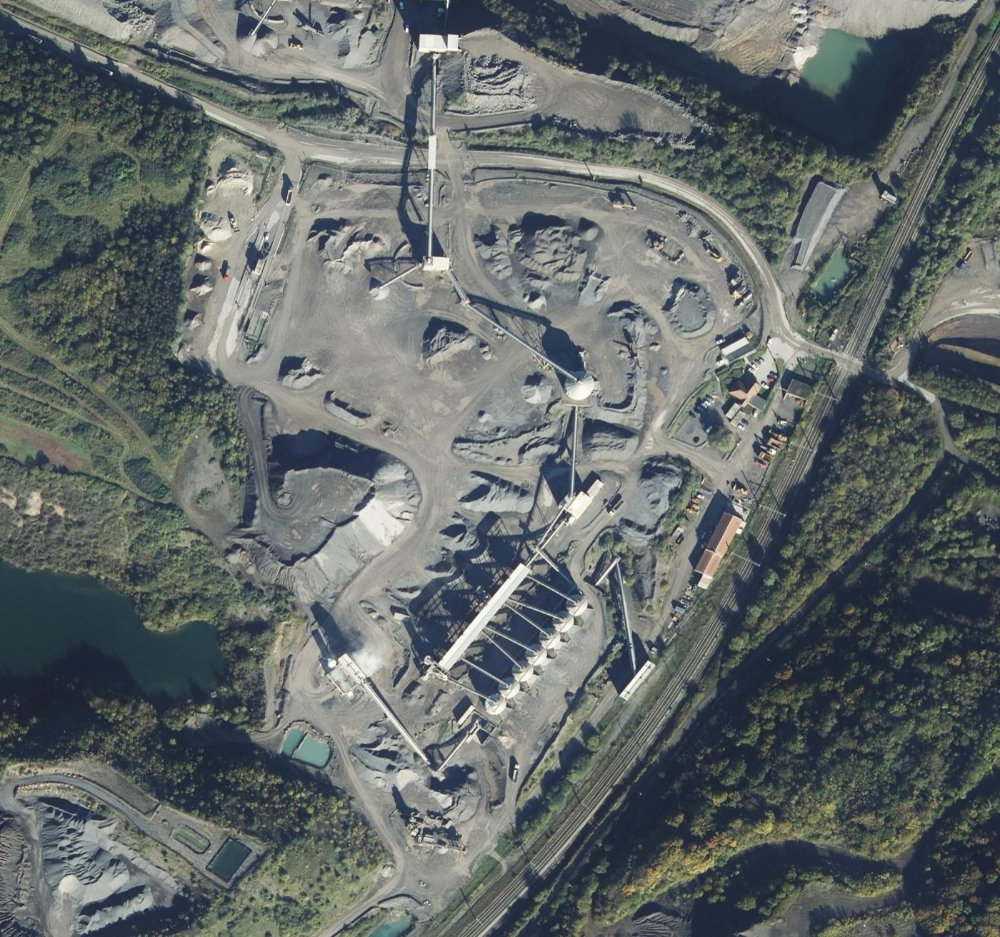
Fond : orthophoto IGN (licence ouverte Etalab)
zone utile ≈ 13 ha
zone de vol (+ marge)
6 GCP
3 points de contrôle
H décollage + base
Marge d'environ une demi-emprise autour de la zone utile
GCP aux angles, au centre et en bordure, hors des stocks (ils bougent) et hors des pistes
Points de contrôle intercalés, dans les zones de stocks
Décollage dégagé, à l'écart des engins, base RTK à côté, vue directe sur toute la zone
Obstacles hauts repérés : convoyeurs et silos au centre
Le plan de vol, chiffré
Paramètre
Choix
Justification
GSD visé
2,5 cm
Largement suffisant pour des stocks
Hauteur
90 m
2,5 × 36,6 ≈ 90 m (GSD 2,46 cm)
Emprise photo
130 × 97 m
5280 × 3956 px × 2,46 cm
Recouvrements
80 % / 70 %
Granulats : textures répétitives
Entre photos / lignes
19,5 m / 39 m
(1 − 0,8) × 97 · (1 − 0,7) × 130
Vitesse
10 m/s
Intervalle 1,95 s ; à 1/1000 s, flou de 1 cm
Zone de vol
≈ 460 × 500 m
13 ha utiles + marges
Volume
≈ 12 lignes · 310 photos
≈ 15 min de vol : 1 batterie + 1 de réserve
Le relief
Stocks de 10 à 20 m de haut : au sommet d'un tas, le drone n'est plus qu'à 70-80 m et le GSD passe à ~2 cm. Acceptable ici ; sinon, suivi de terrain.
Des vues obliques ?
Pour des cubatures, le nadir suffit. Ajouter des obliques si l'on veut aussi les fronts de taille ou un modèle 3D de qualité.
Sens des lignes : parallèle à la plus grande longueur de la zone, et si possible face au vent pour une vitesse sol régulière.
Programmer la mission dans DJI Pilot 2
Importer la zone (KML) dessinée sur l'ortho IGN, ou la tracer sur la télécommande
RTK FIX avant le décollage : sinon on ne lance pas
Exposition : vérifier une photo test (ni brûlée, ni sous-exposée) et la vitesse d'obturation
Vérifier le format (JPEG) et l'espace libre sur la carte mémoire
Enregistrer la mission : elle resservira pour le prochain inventaire (même trajectoire)
Les intitulés exacts varient selon la version de l'application : on fera la manipulation réelle sur la télécommande au jour 2.
Météo et lumière : choisir son créneau
Vent faible : moins de roulis, vitesse sol régulière, moins de poussière
Ciel couvert homogène idéal : lumière douce, pas d'ombres dures
Plein soleil : voler soleil haut (fin de matinée) pour réduire les ombres des stocks et fronts
Pas de pluie : gouttes sur l'objectif, surfaces mouillées brillantes
Lumière stable pendant tout le vol : éviter les passages nuageux rapides
Indice Kp consulté, prévision de couverture satellites
L'ombre est « vue » par le logiciel comme un objet : une ombre qui se déplace entre deux photos perturbe l'appariement et la couleur de l'ortho.
La check-list du sac terrain
Vol
Matrice 4E, batteries chargées (+ réserve)
Télécommande chargée, mission enregistrée
Hélices de rechange
Carte mémoire vide et formatée
Documents réglementaires
Topographie
D-RTK 3, trépied, canne, batteries
Fiche du point connu / identifiants réseau
Cibles GCP numérotées + fixations
Bombe de peinture, clous, mètre
Fiche de relevé des points
Sécurité & confort
Casque, gilet, chaussures de sécurité
Balisage, radio ou téléphone
Trousse de secours, extincteur
Eau, protection solaire
Ordinateur portable (contrôle des images)
Avant de quitter le site : vérifier les images (nombre, netteté, géotags RTK) et faire un alignement rapide si possible. Revenir coûte toujours plus cher que vérifier.
À vous : préparez votre mission
TP en binômes · 45 min
Sur Géoportail, délimiter une zone de stockage de la carrière (ou le site de vol de demain)
Fixer le GSD et en déduire hauteur, emprise, espacements, nombre de photos et de batteries
Placer GCP et points de contrôle, le point de décollage et la base
Choisir le système de coordonnées et la référence d'altitude
Lister les contraintes : zones, obstacles, sécurité, météo, autorisations
Livrable du TP
La fiche de préparation de mission remplie, présentée en 3 minutes au groupe.
Ce qui est évalué
Cohérence GSD / hauteur / recouvrements
Répartition des points d'appui
Choix du référentiel justifié
Sécurité et réglementation
Question
Pour la cubature, où ne faut-il surtout pas placer un point d'appui ?
AÀ un angle de la zone
BSur un stock en cours de reprise par les chargeuses
CAu centre de la zone
DSur une dalle béton dégagée
Afficher la réponse
Réponse B. Un point d'appui doit être stable et immobile entre sa mesure et la fin du vol. Un stock en exploitation bouge (et la cible risque d'être déplacée ou ensevelie). Les dalles dégagées, angles et centre sont de bons emplacements.
Ce qu'il faut retenir du jour 1
Prise de vue
GSD (cm) ≈ H (m) ÷ 36,6 avec le M4E
Recouvrements ≥ 80 % / 70 %
Netteté d'abord : vitesse × pose < GSD
Obturateur mécanique
Référentiels
Lambert 93 ou CC (bandes de latitude)
Altitudes NGF-IGN69 via RAF20
Une coordonnée = toujours son système
Précision
RTK sur point connu ou réseau
GCP répartis, points de contrôle
Le client choisit le système, avant la mission
Demain : terrain le matin (GCP, vol ortho, vol 3D n°1 en autonomie), Metashape l'après-midi. Tenue d'extérieur, chaussures fermées, eau.
Crédits des illustrations
Portrait d'Aimé Laussedat, A. Gerschel, vers 1880 — domaine public (Wikimedia Commons)
H. Daumier, « Nadar élevant la photographie à la hauteur de l'art », 1862 — domaine public
Nadar, vue aérienne de Paris, 1868 — domaine public (Wikimedia Commons)
Orthophotographies, relief ombré LiDAR HD et carte des restrictions UAS : IGN, Géoplateforme — licence ouverte Etalab 2.0
Carte des zones CC : tracé IGN des limites administratives (france-geojson, licence ouverte), schéma Dronexperts
Orthomosaïque, modèle 3D, NDVI et photo brute du projet de Meudon : Dronexperts
Modèles 3D, nuages de points, orthophotos de propriété, de fouilles et de carrière : Dronexperts
Photos de relevé GCP au sol et vue drone : Dronexperts
Caractéristiques Matrice 4E et D-RTK 3 : documentation DJI Enterprise
Schémas et pictogrammes : Dronexperts
Fin du Jour 1
À demain sur le terrain : points d'appui, vol orthophoto et premier vol 3D.